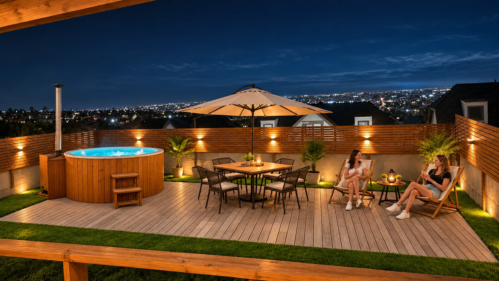

Elige una propuesta
Diseñadas para revisar
Las tres versiones incluyen los modelos A, B y C, la guía de uso y la información de la solicitud de patente.

01 · Editorial
Calidez y confianza
Una portada acogedora, seguida de los modelos y recursos de forma clara.
Explorar propuesta →
02 · Catálogo
Compara y elige
Presentación enfocada en precios y características, con selector y tabla comparativa.
Explorar propuesta →03 · Experiencia
Un espacio para disfrutar
Una propuesta más inmersiva, con fotografía protagonista y modelos en formato editorial.
Explorar propuesta →